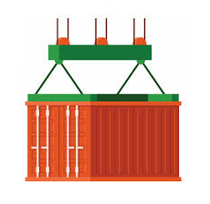
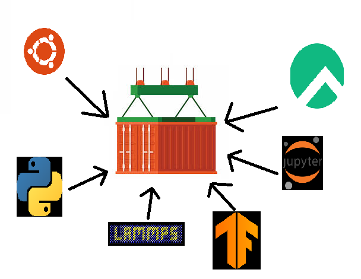
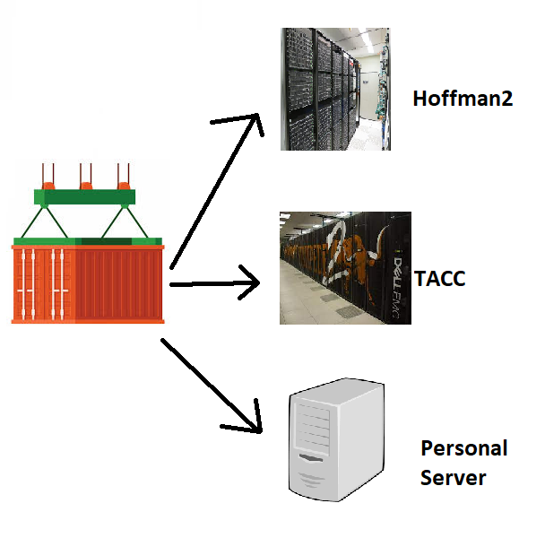
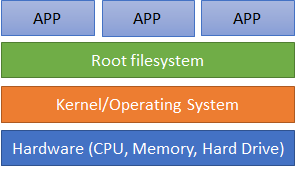
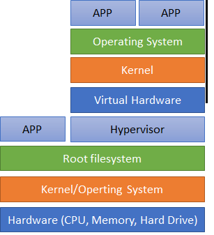
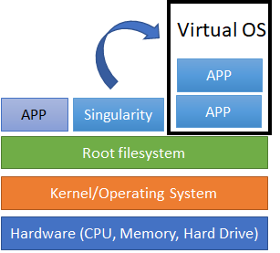
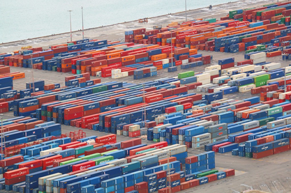
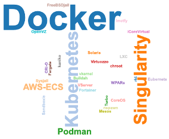
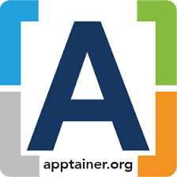
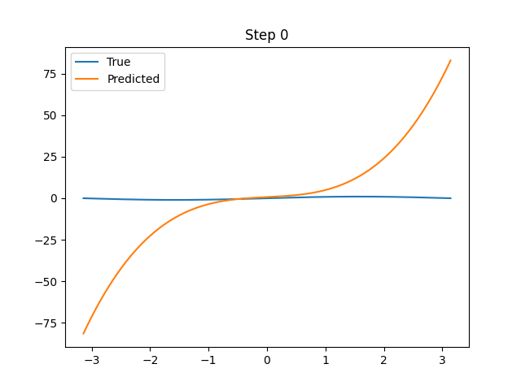

Using Containers on HPC Resources
Running Your Applications with Ease
Learning Objectives 🎯
Welcome!
In this workshop, we will go over using containers on HPC resources, like UCLA’s Hoffman2
- Understand the basics of containers 📚
- Learn how containers can be used in HPC environments 💻
- Explore the benefits of containerization 🚀
- Get familiar with Apptainer and its workflow 🛠️
- Discover best practices for using containers ✅
This is Part I of my workshop on Containers.
Files for this Presentation 📁
This presentation can be found on our GitHub page
- Viewing the slides
- HTML version: https://ucla-oarc-hpc.github.io/WS_containers
- PDF version:
WS_container.pdf - Quarto Markdown version:
WS_container.qmd
- To download the presentation and example files, run the following command (this will download the files from GitHub):
Containers: The Basics
Containers: The Basics 📦
What Are Containers?
- Consistency across platforms ✔️
- Software runs the same way, regardless of where the container is executed.
- Isolation from host system 🔒
- Containers do not interfere with other containers or with the host, ensuring a secure execution environment.
- Lightweight and portable ✈️
- Containers can be easily transferred between systems, cloud providers, or local development environments.

Containerizing Applications 🛠️
Containers allow you to:
- Package applications along with all their dependencies, configurations, libraries, and binaries. This comprehensive packaging ensures that the application runs consistently everywhere.
- Easily deploy and run them across different systems, facilitating scalability and flexibility.

Transferring Containers 🚚
Containers allow for:
- Easy transfer between different HPC resources.
- Ensuring a consistent environment for your software.

Image Ref: Hoffman2 source, Stampede2 source
Understanding Virtualization 🖥️
Containers offer a lightweight, portable, and consistent environment across platforms. To fully grasp the concept of containers, it’s essential to understand virtualization.
Virtualization allows multiple operating systems to run simultaneously on a single physical machine. Each operating system operates as if it’s the only one running on the hardware. While containers share the same OS kernel, virtual machines have their own OS and resources.

GIF from https://giphy.com/
Types of Virtualization 📐
- Hardware Virtualization
- Creates virtual machines with independent OS and resources on a single physical host.
- Ideal for running different operating systems or when complete OS isolation is required.
- Example: VirtualBox, VMware, AWS EC2
- Operating System Virtualization (Containers)
- Allows multiple isolated user-space instances on the same OS kernel.
- Efficient and lightweight, suitable for microservices and scalable applications.
- Example: Docker, Apptainer, Kubernetes
- Application Virtualization
- Packages applications and their dependencies for execution on any compatible system.
- Perfect for deploying apps without worrying about system compatibility or installing dependencies.
- Example: App-V, ThinApp, Turbo
Bare Metal Setup: No Virtualization 💻
- ‘Bare metal’ refers to physical servers running directly on hardware without virtualization. 🔧
- Software and applications are installed directly on the host operating system. 💿
- Resources such as CPU, memory, and storage are dedicated and not shared with other virtual machines. 📊
- Advantages: High performance, direct access to hardware, low overhead. 👍
- Limitations: Less flexibility, limited isolation between applications, potential underutilization of resources. 👎
Software runs directly on OS from the physical hardware
Typical applications are in this fashion
- Most
module loadsoftware
- Most

Virtual Machines: Hardware-Level 🖥️
- Virtual machines (VMs) emulate physical computers and run multiple operating systems on a single host. ⏫
- Each VM has its own virtual hardware, including CPU, memory, and storage. 💾
- VMs are managed by a hypervisor (e.g., VirtualBox, VMware) that abstracts the physical hardware. 🎛️
- VMs provide strong isolation between environments and are ideal for development, testing, and legacy applications. 🛡️
- Limitations: Additional overhead due to full OS in each VM, performance may be affected by virtualization layer. ⏳
Applications running inside of a VM are running on a completely different set of (virtual) resources
A “Machine” within a “Machine”

OS Virtualization: Containers 🐳
- OS virtualization with containers allows multiple, isolated user-space instances to run on a single host OS.
- Containers share the host OS kernel but have their own file system, libraries, and dependencies.
- Containers are lightweight, start quickly, and have lower overhead compared to VMs.
- Containerization provides a consistent and reproducible environment across platforms.
- Containers are ideal for microservices, cloud-native applications, and scalable deployments.
Applications running inside of a container are running with the SAME kernal and physical resources as the host OS
A “OS” within a “OS”

Why use Containers ❓
- Bring your own OS 🌎
- Portability ✈️
- Reproducibility 🔁
- Design your own environment 🎨
- Version control 📑
Challenges with Software Installation 🛠️
- Researchers face difficulties in managing software installations:
- Spend time setting up software on Hoffman2
- Figuring out which versions and modules to load for dependencies
- Having to wait for System Admins to help
- Then start all over when using software on a different HPC resource
HPC resources (like Hoffman2) are SHARED resources 👥
- Researchers are running software on the same computing resource
- No ‘sudo’ and limited yum/apt-get commands available 🚫
Container Advantages ✨
- Install your application once:
- Use on any HPC resource 🌐
- A ‘virtual’ OS:
- Users can have complete OS admin control 🔏

Great for easily installing software with apt/yum 📦
Great if your software requires MANY dependencies that would be complex installing on Hoffman2. ⛓️
- Easily share containers!! 🤝
- Containers as a .SIF file
- Save to Container Registry:
Containerization vs. Traditional Deployment ⚖️
- Traditional Deployment:
- Software dependencies must be installed on the host system. 📁
- Conflicts can occur between different software versions. ⚠️
- Challenging to achieve consistent environments across platforms. 📉
- Containerization:
- Dependencies are packaged within the container. 🎁
- No conflicts with the host system or other containers. ☮️
- Consistent and reproducible environments on any platform. 📈
Software for Containers 🔧

Podman 📦
- Similar syntax as with Docker
- Doesn’t have root daemon processes
- On some HPC resources (not on Hoffman2, yet) 🔜
Docker 🐳
- One of the most popular containerization software
- Many popular cloud container registries to store Docker containers:
- DockerHub, GitHub Packages, Nvidia NGC
- MPI over multiple servers not well supported 🚫
- Most likely NOT available on many HPC systems (not on Hoffman2) ❌
Apptainer
Apptainer 🚀
- Formerly Singularity
- Designed and developed for HPC systems 🖥️
- Most likely installed on HPC systems (installed on Hoffman2) ✅
- Supports Infiniband, GPUs, MPI, and other devices on the Host ⚡
- Can run Docker containers 🐋
Security considerations 🛡️
- Built with shared user system environments in mind
- NO daemon run by root 🚫
- NO privilege escalation. Cannot gain control over host/Hoffman2 🔒
- All permission restrictions outside of a container apply to the inside 🔐
Common Usage on Hoffman2 💡
To use Apptainer on Hoffman2, simply load the module:
- Only module you need to load!
- Except for a MPI module if running parallel
Common Usage Continued 🔧
Common Apptainer commands:
- Run a command within a container
apptainer exec [options] container.sif
apptainer exec mypython.sif python3 test.py
# Runs the command `python3 test.py` inside the container- Start an interactive session inside your container
Note
Apptainer will NOT run on Hoffman2 login nodes.
Apptainer Workflow for running on H2 🔄
Create 🛠️
Transfer ↪️
Run ▶️
Apptainer Workflow (Create) 🛠️
1. Create 🛠️
Transfer
Run
- Build a container
- From Apptainer or Docker on your computer
- Where you have root/sudo access
- Typically, Apptainer containers end in
.sif
- Use a pre-built container:
- Search Container Registries
- DockerHub, GitHub packages, Nvidia NGC
- On H2,
$H2_CONTAINER_LOC
Apptainer Workflow (Transfer) ↪️
Apptainer workflow (Run) ▶️
Create
Transfer
Run ▶️
Run Apptainer on your container:
- Can run in an interactive (qrsh) session
Or run as a Batch (qsub) job
Create job script
myjob.job
- Submit your job
MAJOR TAKEWAY ⭐
- Apptainer containers run like any other application.
- Run the same commands as you normally would
- Just add an Apptainer command to any command you want to run inside the container
So….
Turns into
Examples
- Example 1: Simple containers with TensorFlow
- Example 2: GPU containers with PyTorch
- Example 3: Parallel MPI containers
You can find the workshop material here:
Example 1: TensorFlow (1) 🧠
This example will use Tensorflow
- Great library for developing Machine Learning models
- We will use the MNIST dataset
- Data of over 60,000 training images of handwritten digts

We will use TensorFlow to train a model from this dataset
Example 1: TensorFlow (2)
- Go to
EX1directory - Look at
tf-example.py- This example uses TF to train from the MINIST data
IT DOESN’T WORK!!! Need tensorflow installed!!!
- You can install it your yourself (via pip/conda maybe?)
- Maybe errors with building
- Have to build again using another computer
- Instead of installing it yourself, let is find a container!
Example 1: TensorFlow (3)
Interactive
- We see a file named,
tensorflow_2.7.1.sif- This SIF file is the container
- This container is a OS with python and TF installed inside
Tip
- See that we didn’t need to load any python module!
- We didn’t need to install any TF packages ourselves!!
- Everything is inside the container!
Example 1: TensorFlow (4)
Batch
- Going interactively inside the container (Previous slide)
apptainer shell [container.sif]
- Run a single command in the container
apptainer exec [container.sif] [command]
Example 2: GPUs with PyTorch (1) 🎆
- This example uses PyTorch with GPU support for faster speed 🚀
- Another great Machine Learning framework
- Go to the
EX2directory- Examine the
pytorch_gpu.pyfile - Optimize a 3rd order polynomial to a sine function
- Examine the
- To run this example, we’ll need to find a container with GPU support!
- Let us go to Nvidia GPU Cloud (NGC)
- Containers built by Nvidia for GPUs

Example 2: GPU job (2)
Let’s run python3 pytorch_gpu.py on a GPU node
- Download the PyTorch container from Nvidia NGC
- Run apptainer with the
--nvoption.- This enables the container to use the host’s GPU drivers
Example 3: Parallel MPI containers 🌐
In this example, we’ll run a parallel MPI container using NWChem, a popular computational chemistry application.
Many applications use MPI to run across multiple CPUs, and NWChem is one of them.
- On Hoffman2, a NWChem container with MPI has already been built
$H2_CONTAINER_LOC/h2-nwchem_7.0.2.sif
Typically, we will run NWChem like this:
module load intel/2022.1.1
module load nwchem/7.0.2
`which mpirun` -np 5 nwchem water.nw > water.outTo run inside the container:
- Load the intel module
- Sets up (INTEL)MPI on the host (outside the container)
- Add
mpirunin front ofapptainer exec
qrsh -l h_data=10,arch=intel-gold* -pe shared 5
module load intel/2022.1.1
`which mpirun` -np 5 apptainer exec $H2_CONTAINER_LOC/h2-nwchem_7.0.2.sif nwchem water.nw > water.outA example batch job is located in EX3/nwchem.job
Considerations and Best Practices
- 📦 Size of container
- Keep it small and minimal
- Include only necessary components for your applications
- Large containers need more memory and take longer to start up
- 👥 Share .sif files with your friends!
- 🔧 Experiment creating your containers
- Save your (Docker) containers to DockerHub or GitHub Packages
- Find examples of Dockerfiles and Apptainer def files on our GitHub
- 🔍 Look out for a follow-up workshop
Thank you!
Questions? Comments? 🤔
Charles Peterson cpeterson@oarc.ucla.edu